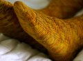
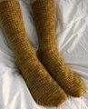
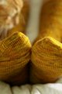

|
||
Premium Patterns Wintry Mix Mitts Love Bytes HawkeyeFree Patterns Kiddie Cadet Summerlin Ruffled Scarf Seamless DS Sock Simply Seamless Pouch Myriads of MushroomsExtras DIY Mitten Blocker Felt Patch Tutorial Yarn Dyeing Tutorial Needle Pouches Knitting Journal |
January 24, 2011 - Posted by Grace SchneblyHarvest SocksProject Specs It was my resolution this year to finally knit a pair of socks out of actual sock yarn. I've knitted only one pair of socks before, the Log Cabin Socks out of Cascade 220 Superwash, but it was so long ago that I really don't remember much about the techniques involved. Honestly I was a little nervous to get started, but I'm glad I finally have another pair of socks under my belt and am pretty excited to get started on more! I am finally ready to learn the ins and outs of sock knitting as well as learn some new techniques that I've yet to try after all these years of knitting. Si has been asking for a warm pair of socks to wear around the house, and I got these finished just in time for the insanely cold weather here in Boston today. It's supposed to feel like -25°F with the wind so hopefully these socks will keep his toes from freezing off while he waits for the train in the morning. I really like the pattern he picked out. The construction and written instructions are very simple and good for a sock beginner like me. The stitch pattern instructions are written out row by row (there is no chart) but I wasn't bothered by this at all because it is so simple and easy to memorize. I did end up making one mistake, which fortunately didn't end up affecting the fit. After turning the heel I forgot to add a plain knit round between each decreases round. Oh well! This was my first time working with Dream in Color Smooshy and I really liked it! I'm always a bit hesitant to combine variegated yarns with stitch patterns but I was so happy with the results. I think both work together to create a great manly pair of socks! The color combination is a unique blend of orange, yellow, green, brown and a tiny bit of purple; a combination I would have thought to put together myself but thats why I leave it up to the pros. And the best part? Absolutely no pooling! In fact I loved this yarn so much I ordered some Dream in Color (Smooshy, Classy, and their new yarn Everlasting Sock) for the shop last week so it should be in stock at Mr. Yarn in the very near future! |
   Recent ReviewsRecent Posts
 Our Favorites
|
| © 2007 KathrynIvy.com | ||
{kind=link}
{kind=link}
{kind=link}